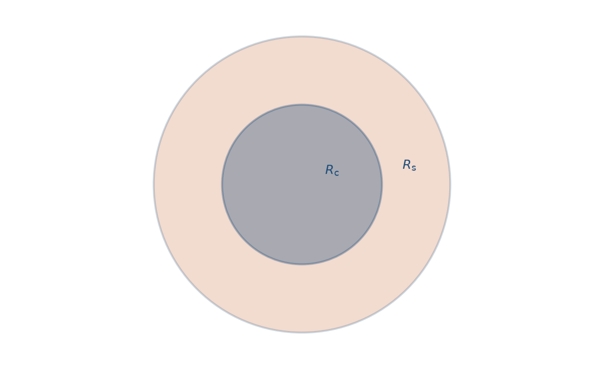
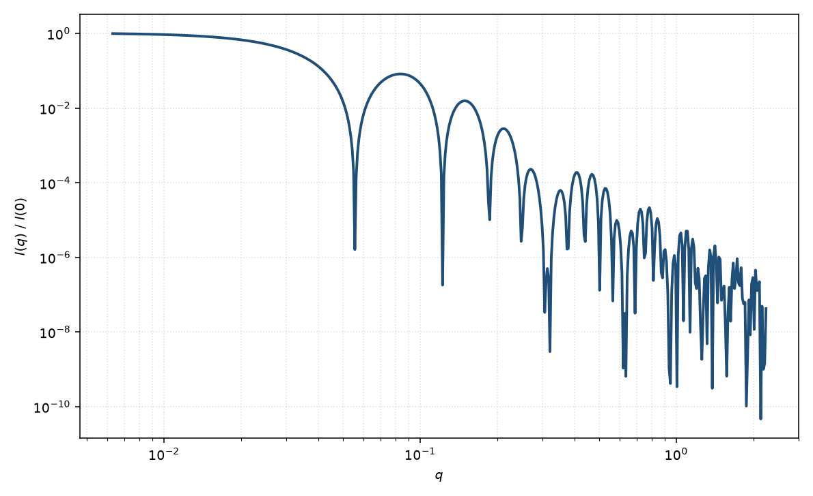

核壳球
core-shell sphere
适用场景
核壳球描述径向两段均匀散射长度密度：核半径 $R_c$、壳外半径 $R_s$，以及核、壳、溶剂三套 $\rho$。适用于无机核–有机壳纳米颗粒、嵌段共聚物球形胶束、带溶剂化壳的胶体，以及对比变分后仍需两段剖面的体系。
曲线直觉：与均匀球相比，第一极小位置由有效衬度半径决定，中间 $q$ 可出现肩峰或次级振荡。壳很薄且壳衬度接近溶剂时，退化为均匀球；核衬度匹配溶剂时，接近空心壳（囊泡极限）。
壳厚、核半径与两段衬度高度相关：“厚壳低衬度”与“薄壳高衬度”可给出相近 $I(q)$。有中子 H/D 或 ASAXS 对比点时，简并可显著减弱。
物理图像
球对称振幅按半径分段积分，等价于两层均匀球振幅之差（或加权和）。Pedersen（1997）把同心壳写成各界面处 Rayleigh 振幅乘以该层相对溶剂的衬度，再相加。强度为振幅模方，稀溶液下再乘数密度。
核壳的“额外”信息出现在中等 $q$：壳干涉改变极小深度与相位。高 $q$ 仍由最锐的密度跳变控制，尖锐界面给出 $q^{-4}$；界面模糊则应改用模糊球或径向剖面。
示意图


核心公式
令 $\Phi(qR)$ 为归一化球振幅，$V(R)=4\pi R^3/3$。核壳振幅
$$A(q)=(\rho_c-\rho_s)V(R_c)\Phi(qR_c)+(\rho_s-\rho_{\mathrm{solv}})V(R_s)\Phi(qR_s),$$ $$P(q)\propto |A(q)|^2,\qquad \Phi(x)=\frac{3(\sin x-x\cos x)}{x^3}.$$符号当场约定：$\rho_c,\rho_s,\rho_{\mathrm{solv}}$ 分别为核、壳与溶剂的散射长度密度。稀溶液 $I(q)=n|A(q)|^2+B$。
参数表
| 参数 | 符号 | 含义 | 单位 | 典型范围 |
|---|---|---|---|---|
| 核半径 | $R_c$ | 均匀核的外半径 | Å 或 nm | 5–500 Å |
| 壳外半径 | $R_s$ | 壳层外表面半径，$R_s>R_c$ | Å 或 nm | 比核大约一个壳厚 |
| 核 SLD | $\rho_c$ | 核散射长度密度 | Å$^{-2}$ | 由组成计算 |
| 壳 SLD | $\rho_s$ | 壳散射长度密度 | Å$^{-2}$ | 可含水化 |
| 溶剂 SLD | $\rho_{\mathrm{solv}}$ | 溶剂散射长度密度 | Å$^{-2}$ | 缓冲/氘代可调 |
| 标度 / 本底 | $n$, $B$ | 数密度与常数本底 | 与强度单位一致 | 实验相关 |
拟合注意
衬度比与壳厚是主简并。优先固定由化学计量或对比实验得到的 $\rho$，只放几何参数；或固定壳厚、拟合衬度。多分散通常加在核半径或外半径上，同样抹平振荡。
取向对球核壳仍无关。磁性核壳：核磁 SLD 与壳磁 SLD 可独立于核 SLD（例如磁核加非磁壳、或磁死层），须在拟合注意中分开，而不是只用一套 $\Delta\rho$。
相近模型
参考文献
- Pedersen, J. S. Analysis of small-angle scattering data from colloids and polymer solutions: modeling and least-squares fitting. J. Appl. Cryst. 1997, 30, 339–354. DOI: 10.1107/S0021889897002532